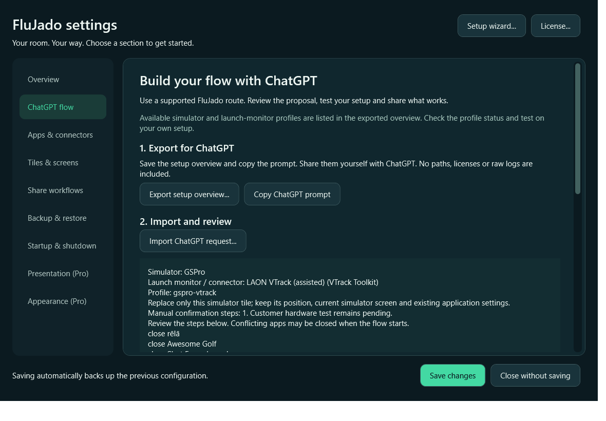
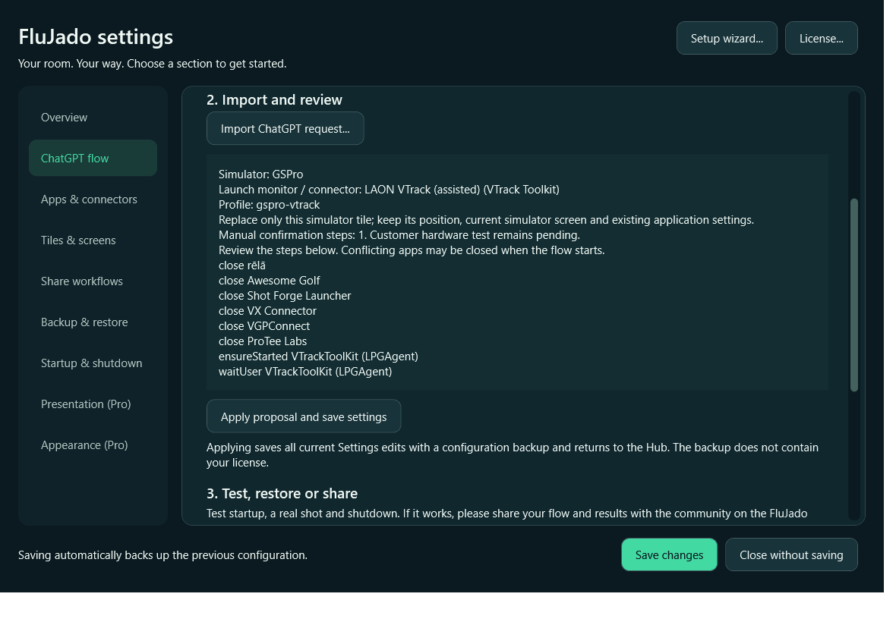

FLUJADO / QUICK WORKED EXAMPLE / beta.18.8Build a flow with ChatGPT
Use your own exported setup, review one supported route and keep a way back.
Worked example: GSPro + VTrackToolKit. The same export/import/review steps apply to other listed profiles. The request file is profile-specific. This is a software walkthrough, not a new hardware certification.

Before you start
Install and activate your simulator and connector first. Check that a real shot works without FluJado. Finish your simulator session before changing a flow. Open Settings > Apps & connectors and check the installed application paths. Choose your intended simulator screen in Tiles & screens. These steps do not install connectors or activate third-party licences.
1. Export your own setup
Open Settings > ChatGPT flow. Click Export setup overview..., save FluJado-ChatGPT-setup.json somewhere you can find it, then click Copy ChatGPT prompt. Paste the prompt into ChatGPT and attach that exported file. The export describes supported profiles and software presence; it contains no executable paths, licences or raw logs. Review it before sharing. Nothing is sent automatically.
2. Ask for the route you actually use
Tell ChatGPT your simulator, launch monitor and connector. For this worked example: “I use GSPro with VTrack and VTrackToolKit. Please use the matching route from my attached export.” Ask it to explain missing software and manual steps. For another setup, substitute your actual choices; do not reuse the VTrack request. If your combination is not listed, stop and contact FluJado. ChatGPT cannot supply a missing connector or invent a new supported profile.
3. Save the request file
Ask ChatGPT for a downloadable .json request. The example file linked below selects the existing gspro-vtrack profile. It contains no paths or executable code. Only use it when your own export includes that profile and it matches your hardware. The setup overview is an input for ChatGPT, not the file to import as a request.
4. Import and review
Return to Settings > ChatGPT flow and click Import ChatGPT request.... Choose the request JSON. Read the proposal: simulator, launch monitor/connector, profile ID, manual confirmations and steps. Importing does not save changes or start a simulator. The supported route replaces the selected simulator tile’s workflow when applied; it can also add companion shutdown/cleanup to other flows. Those apps may be closed when a flow starts. Existing app settings, tile appearance/order and simulator screen choice are retained. If a path is missing or invalid, correct it in Apps & connectors, save as needed and import again.

GSPro/VTrack proposal from the same isolated software test. No simulator was started.
5. Apply only when the proposal is correct
Click Apply proposal and save settings. This saves all current Settings edits, not just the request, creates a configuration backup and returns to the Hub. Review or discard unrelated edits first. Your licence is not included in this configuration backup and is not reset by the flow. If you only want to inspect the proposal, choose Close without saving instead.
6. Try the example flow
Click your GSPro tile. The existing VTrack route opens/uses the Toolkit and asks you to select the real GSPro target in its Game tab and click Launch. Do not select a ShotForge compatibility bridge as the real GSPro target. Complete the Hub confirmation only after GSPro has loaded and VTrack is connected. This assisted profile checks Toolkit process presence, not a successful hardware connection. Verify GSPro receives a real shot, then check shutdown. Other profiles have different steps: follow their proposal and prompts.
7. Restore if the change is wrong
Open Settings > ChatGPT flow and click Review last flow backup. Review the restore proposal, then click Restore reviewed configuration only if you want to restore. Reviewing alone changes nothing. Restoring replaces the configuration with the version from before the last ChatGPT-flow save, including later configuration edits. The current saved configuration receives a new backup. Licence and simulator settings are not restored or modified. This is a last-change recovery shortcut, not a version selector.
8. Share success or ask for help
After you have personally verified startup, a real shot and shutdown, select the configured profile under Configured profile to share, tick I tested startup, a real shot and shutdown successfully, then click Export for Discord.... Review and share the file yourself in the FluJado Discord workflow channel. Custom-edited steps cannot be represented by the preset-only export. If it fails, return to the Hub and choose Export Diagnostic Report. Report your Hub version, simulator, monitor/connector, profile, steps, expected result, actual result and exact error. Use bug-reports; send a reviewed diagnostic report privately when requested. Never post passwords, licence keys, raw logs or config.json.
Example files
Example question (edit your choices) · Example GSPro/VTrack request JSON
{
"format": "FluJado.AssistantRequest",
"version": 1,
"profile": "gspro-vtrack",
"screen": "keepSimulatorScreen"
}Beta.18.7: recognizes GUID-named Toolkit packages by registered publisher and matching manifest identity, with no fixed package name, and adds registered-MSIX executable discovery and corrects automatic GSPro/VTrack display targeting. This does not implement package activation or silently repair saved runtime paths after a later Toolkit update. Existing explicit display-app choices remain authoritative. Real VTrack startup, screen placement and shot delivery still require tester validation. If discovery fails, do not change WindowsApps permissions; report the error and package version.
Current downloads and guides
Prepared 26 October 2026. Beta.18.7 documentation. Uses a synthetic request and a privacy-safe GSPro/VTrack fixture screenshots.